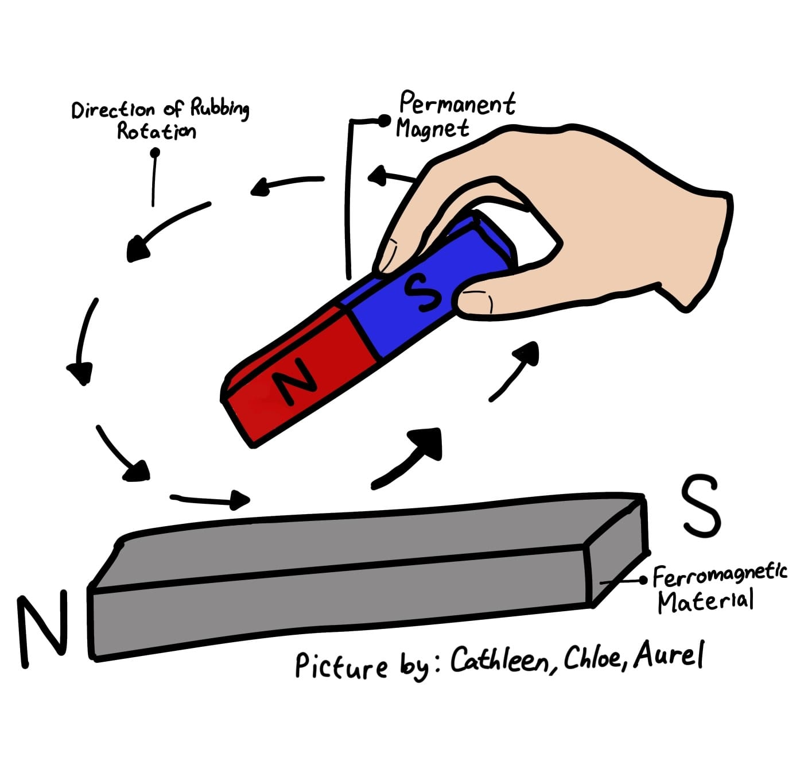
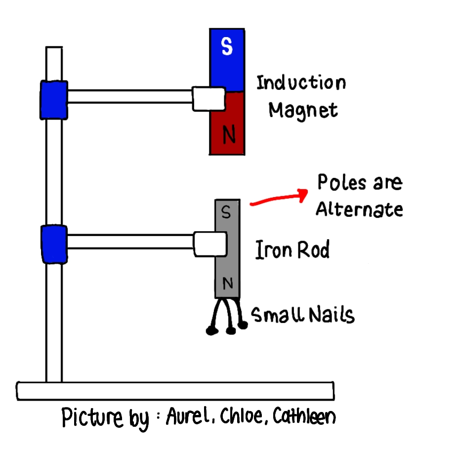
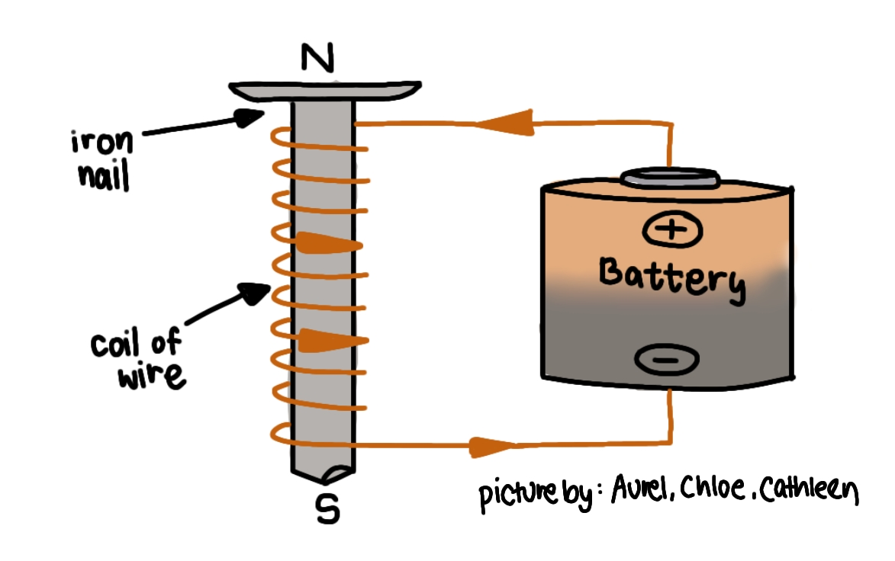
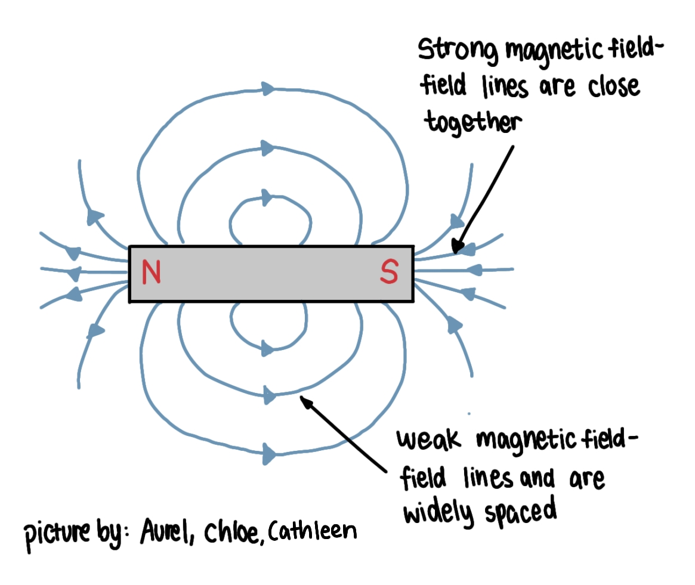
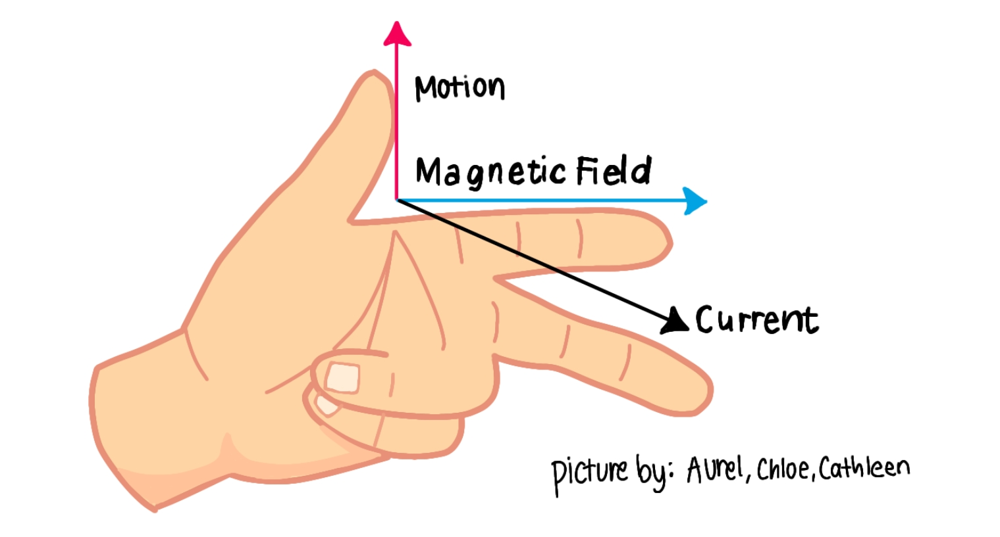
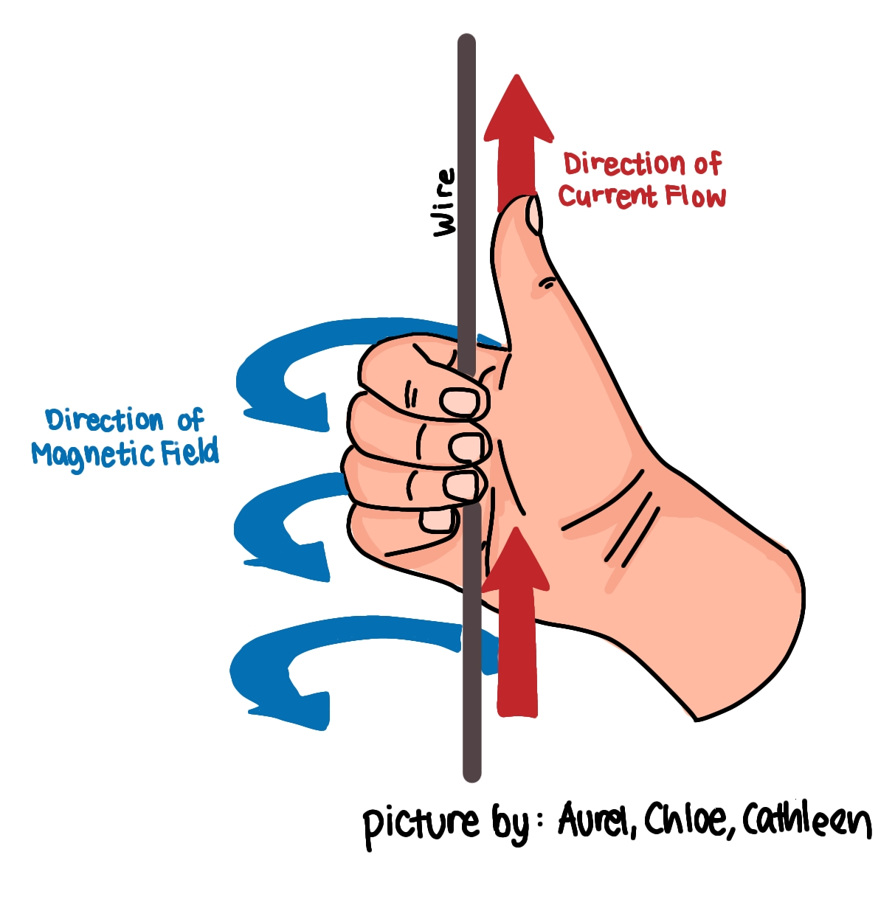

Grade 9
Semester 1: Dynamic Electricity
A. Dynamic Electricity
- Electric Current: Amount of charge that flows in a circuit every second.
- Voltage: Amount of charge (Coulomb) that flows in the circuit every second.
B. Conditions for Current to Flow in a Circuit
- There is potential difference (a battery).
- Closed loop circuit.
- The components in a circuit are: battery, switch, and lamp/bulb.
C. Ohm’s Law
Ohm’s Law states that the current through a conductor is directly proportional to the voltage across it and inversely proportional to its resistance.
I is directly proportional to V, but I is inversely proportional to R.
D. Series and Parallel Circuits
A complete circuit is a closed-loop circuit that allows electricity to flow in it. It has a battery, resistance, and a cable as the connector. An incomplete circuit is an open-loop circuit that is broken at a particular point, and electricity cannot flow in it.
1. Series Circuit:
- A circuit in which the current has only 1 path to flow in (no junction). This means that the same current flows in each component in the circuit.
- In a series circuit, the circuit shares the same current.
- The ammeter (always used in a series circuit) is the device used to measure current.
- To find the total resistance in a series circuit, the formula is Rs = R1 + R2.
2. Parallel Circuit:
- A circuit in which the current has more than one path to flow (has a junction). This means that different currents may flow in each component in the circuit.
- In a parallel circuit, the circuit shares the same voltage.
- The device used to measure the voltage is a voltmeter.
- To find the total resistance in a parallel circuit, the formula is 1/Rp = 1/R1 + 1/R2.
E. The Movement of Charge
- A positive charge will naturally move in the direction of an electric field (work is not required).
- A negative charge will naturally move against the direction of an electric field (work is not required).
- A positive charge naturally goes in the direction of an electric field which means work is not required.
- A negative charge naturally goes in the opposite direction of an electric field, but if it has to go along that direction, work is needed.
F. Kirchhoff’s Law
1. Kirchhoff’s 1st Law:
States that the sum of currents entering any junction in a circuit is equal to the sum of currents leaving that junction (I in = I out).
2. Kirchhoff’s 2nd Law:
States that the total electromotive force (e.m.f) in a closed circuit is equal to the sum of the potential differences in the circuit.
Semester 2: Magnetism
A. Magnets and Materials
- Magnets are objects that create an invisible force called a magnetic field, which can pull certain materials that are magnetic materials like iron and nickel towards it.
- Two Main Types of Magnets: Permanent magnets (always have a magnetic field) and Electromagnets (uses electricity to create magnetic fields).
- Two Types of Magnetic Materials: Magnetic Materials (magnets can attract materials such as iron and steel) and Non-magnetic Materials (magnets are not able to attract materials such as wood and paper).
B. Magnetic Poles
- There are 2 poles in most magnets which are called the North Pole and the South Pole.
- The poles are the strongest parts of a magnet.
- If there are 2 similar poles then the magnets will repel each other.
- If there are 2 opposite poles, then the magnets will attract each other.
C. Magnetic Induction
Magnetic induction is the process by which a material with magnetic properties becomes magnetized due to an external magnetic field. A new magnetic field is produced inside the material as a result of the alignment of the magnetic domains caused by the external field.
D. Methods of Magnetization and Demagnetization
1. Method of Magnetization:
- Friction/Rubbing: Rubbing a permanent magnet against a ferromagnetic material in the same direction many times until the material becomes a magnet.

- Induction: Bringing a permanent magnet closer to a ferromagnetic material, aligning the magnetic domains within the material.

- Electromagnetism: When a current flows through a wire and a magnetic field is produced around it, electromagnetism occurs. This happens when a ferromagnetic material is placed near the magnetic field that is generated by an electromagnet.
2. Method of Demagnetization:
- Hammering: A magnet’s strength and force comes from the alignment of small regions called magnetic domains. When the magnet is hammered, mechanical shock disrupts the alignment of the magnetic domains.
- Heating: When a magnet is heated, the heat increases the vibration of atoms in the magnet, breaking the magnetic alignments.
- Passing Alternate Current: An alternating current produces magnetic fields that change direction, causing the magnetic domains to lose alignment.
E. Magnetic Field
- The volume of space around a magnet where magnetic forces can be detected, often demonstrated using iron filings or compasses.
- The magnetic fields in the North Pole will go out, and in the South Pole, the magnetic fields go out.
F. Magnetic Field in a Wire with Electric Current
The magnetic field in a wire with electric current is the magnetic field that is generated around a conductor when an electric current flows through it. The strength of a magnetic field around a current-carrying wire can be increased by increasing the current in the wire and wrapping the wire into a coil or solenoid.
 G. Common Uses of Electromagnet
- Electric Motors
- Speakers
- Electric Bell
- MRI Machine
H. How an Electric Bell Works
An electric bell uses an electromagnet to attract an iron armature, causing a hammer to hit the bell. When the bell is pushed, current flows, attracting the armature and making the hammer strike the bell.
I. Lorentz Force
Lorentz Force is the force experienced on a charged particle moving with velocity through an electric field and magnetic field. In the Lorentz Force, we can use the left-hand rule to detect where the motion/force of the object is going to move.
Blooket Game
Test your knowledge with this fun Blooket game!
Ohm's Law Simulation
Explore the Ohm's Law with this interactive simulation!
Source: pHet Colorado (Ohm's Law)References
References from teachers PPT and notes